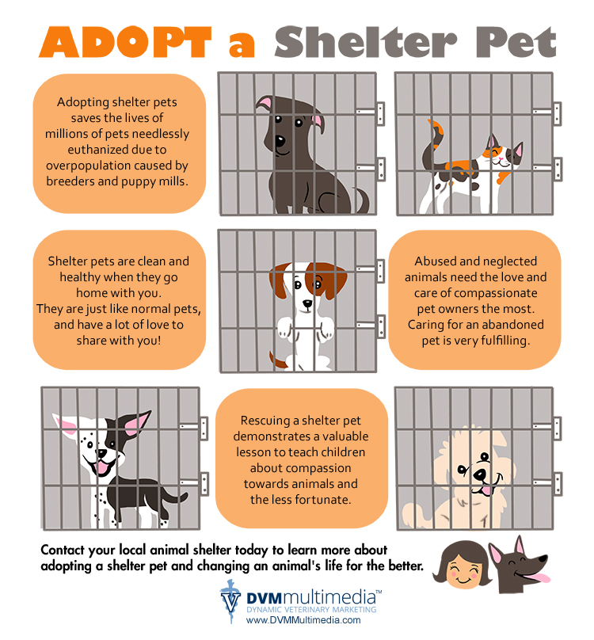

Why Adopting a Pet Is a Great Choice
Adopting a pet can be one of the most rewarding decisions you make. Not only are you giving a home to an animal in need, but pets have been shown to improve the lives of their owners in many ways.
When you choose to adopt, you're not just saving a life. You're also gaining a friend who will bring joy, laughter, and companionship into your home. Pets can help reduce stress, lower blood pressure, and increase physical activity. Plus, adopting from a shelter helps reduce the pet overpopulation problem.
Before adopting, consider the type of pet that would best fit your lifestyle. Think about the size of your home, the amount of time you have to spend with a pet, and any allergies family members might have. Shelters have a wide variety of animals looking for homes, from dogs and cats to rabbits and birds, so you're sure to find a companion that's right for you.
Adoption Stories
Meet Lucy, a playful beagle mix who found her forever home last month. Lucy was shy at first, but with patience and love, she's now a joyful and energetic member of her new family. Stories like Lucy's show the transformative power of pet adoption.
Getting Ready for Your New Pet
Preparing for a new pet involves more than just love. Ensure you have the necessary supplies, such as a bed, food, and toys. It's also important to schedule a visit to the vet for a health check-up. Educating yourself on pet care will set you and your new companion up for a happy life together.
Remember, adopting a pet is a long-term commitment that should be made with care and consideration. But it's also a deeply fulfilling experience that brings love and joy into your life. If you're thinking about adding a furry friend to your family, visit your local shelter today and meet your new best friend.